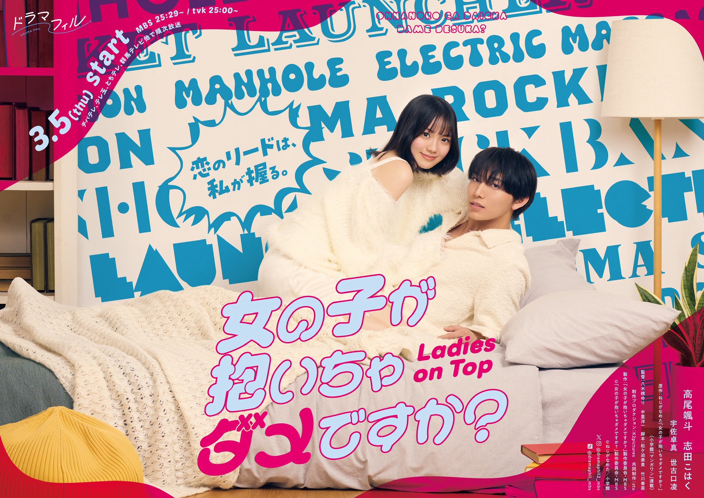

Onna no Ko ga Daicha Dame Desuka? (2026)
女の子が抱いちゃダメですか？

Kajitani Mitsuki, menjaga penampilannya yang sederhana dan anggun. Memiliki cukup banyak pengalaman berkencan dengan pria, tetapi sebenarnya, ia sangat tidak nyaman diungguli oleh pria atau terlibat dalam tindakan intim yang manis. Akibatnya, tidak satu pun hubungannya yang bertahan lama. Ia mencapai usia 24 tahun tanpa pernah menemukan cinta yang bertahan lama.
Kemudian ia mulai berpacaran dengan Shinomiya Shinomiya Takayuki, seorang karyawan elit di sebuah perusahaan perdagangan terkenal. Namun, pada malam pertama mereka bersama, sesuatu yang tidak biasa terjadi. Tepat ketika mereka akan mulai bermesraan, perilaku Shinomiya tampak aneh. Faktanya, Shinomiya juga kesulitan mengungguli wanita dan belum mampu mengatasi kompleks dan traumanya terkait seks.
Melihat Shinomiya tersipu dan meminta maaf, jantung Mitsuki berdebar kencang untuk pertama kalinya. Ia menyadari ketidaknyamanannya dengan harapan bahwa wanita harus selalu pasif, dan menyadari bahwa ia telah lama ingin menjadi "orang yang memimpin." Sementara itu, di hadapan sisi asertif Mitsuki, Shinomiya juga mulai mengungkapkan perasaan yang selama ini ia sembunyikan.